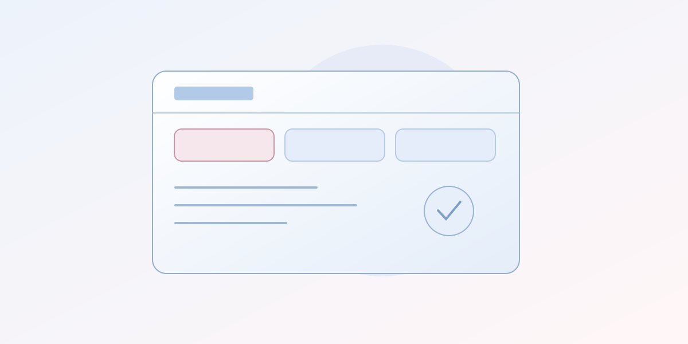
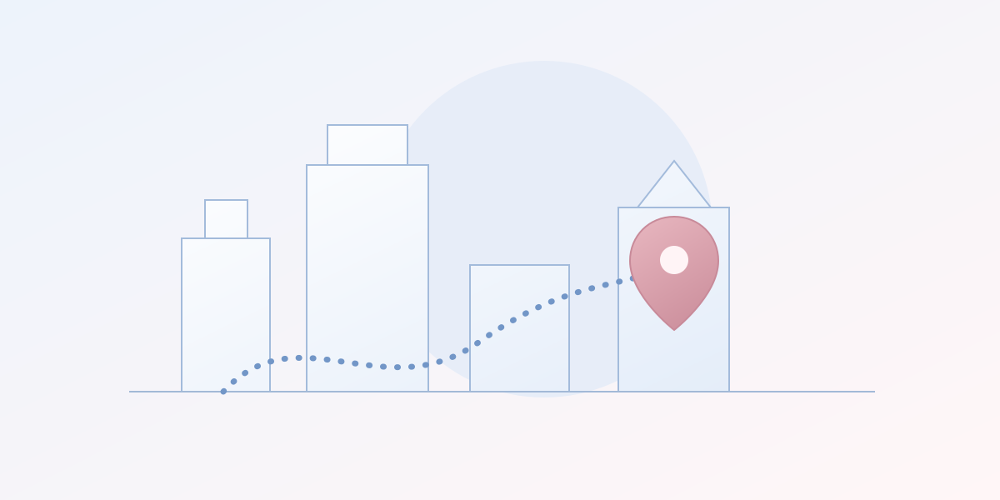

В фокусе
В фокусеУ IKEA появилась площадка перепродажи мебели
В Великобритании запущен сервис для продажи подержанных товаров IKEA напрямую друг другу.
Суть и подробностиСобытия и объяснения
Авто, дом, город и технологии.
Что происходит — и что это
меняет для нас.
В фокусеВ Великобритании запущен сервис для продажи подержанных товаров IKEA напрямую друг другу.
Суть и подробностиЛента новостей

Вся карточка сравнения ведёт к подробностям — на телефоне и компьютере.
1 минута на чтение
Navigation Connect передаёт сервисам местоположение и расчётное время прибытия из Google Maps и Waze.
1 минута на чтениеВ Великобритании запущен сервис для продажи подержанных товаров IKEA напрямую друг другу.
2 минуты на чтениеAndroid получил фоновую работу перевода, а iOS — воспроизведение через разговорный динамик.
1 минута на чтение
В новых R1 и R2 компания переработала боковые щётки и систему сбора мусора.
1 минута на чтение
В анонсе Google — сведения о задержках транспорта и новые сценарии поиска мест.
1 минута на чтениеПопробуйте другое слово или покажите все новости.
Хороший вопрос — начало материала
Поделитесь событием, которое заслуживает
внимательного объяснения.